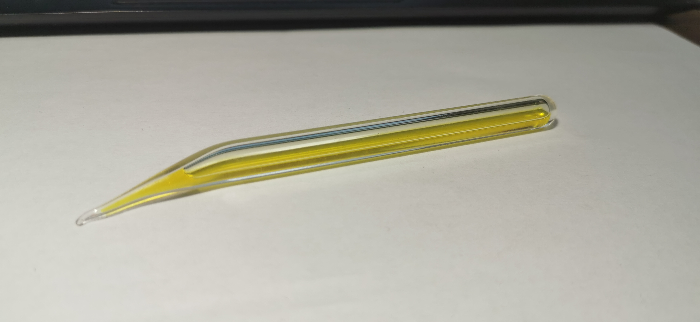
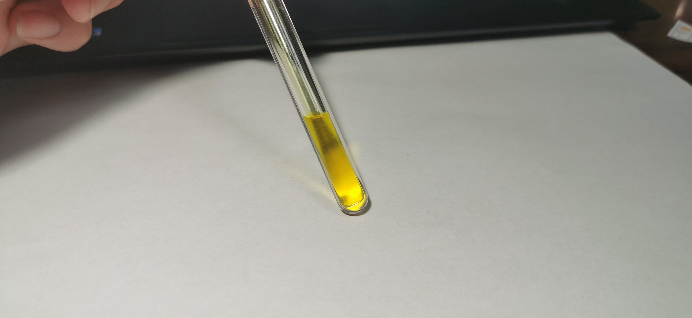

氯
2018.11 液氯 来自Lost
 液氯：液氯是高压藏品中比较好实现的，近期有大佬出售液态的SO₂ CO₂甚至O₂，是很难实现的。卤素一族在室温下的物态差异很大，其中氯单质Cl₂是气体，且沸点高大-34.67℃，这个温度还是很容易达到的，使用干冰或者液氮都可以将其冷却至此，然后在低温下选用较厚的试管玻封，使其温度在缓慢回到室温的过程中，压力逐渐增大，而氯保持液态。
但相对来说做到短小精致比较困难，我的意思是使液氯尽可能充满试管，并使用普通的玻封试管而非细长试管；然而我这支竟然长到没有足够大的模具来做树脂或滴胶，这由于Lost的技术问题，因此我认为它是一支潜在的炸弹，很希望有方法能安全地处理掉。有关Lost是骗子的问题在铊的页面中有所阐释。